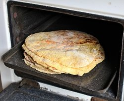

Home
Corn Tortillas

Homemade tortilla shells to be stuffed with goodness
Unfortunately, I have no idea how to cook. However, I am required to publish a small
recipe website. For example, one of the ingredients is masa harina. I don't have a clue
what that is.
Ingredients
- 1 ¾ cups masa harina
- 1 ⅛ cups hot water
Steps
- Mix it in a bowl
- Knead it
- Cover with plastic wrap
- Sit at room temp for 30 minutes
- Divide dough into 15 balls
- Press each ball flat between two sheets of plastic wrap
- Cook in pan for about 30 seconds per side
- Fill 'em, roll 'em up and eat 'em yum!